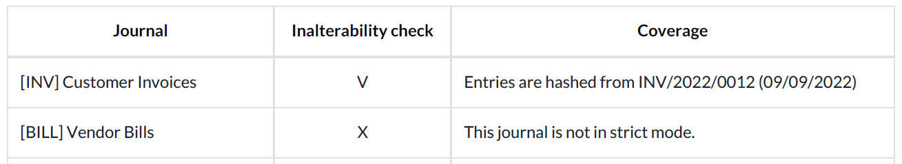
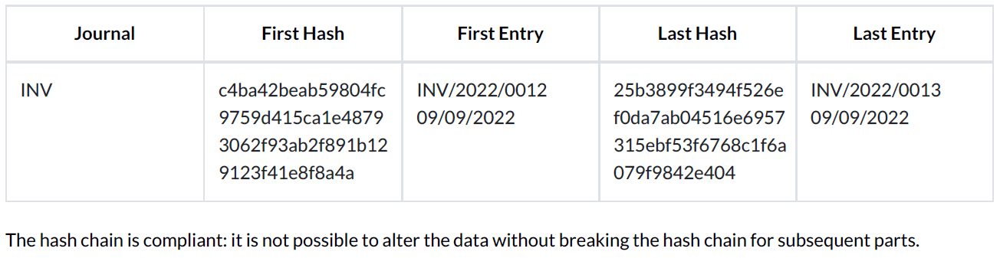

Reporte de comprobación de inalterabilidad de datos¶
Las autoridades fiscales de algunos países exigen que las empresas demuestren que sus asientos contables registrados son inalterables, lo que significa que una vez que se registra un asiento, ya no se puede modificar.
Para ello, Odoo puede usar el algoritmo SHA-256 que se encarga de crear una huella digital única denominada hash para cada asiento registrado. El hash se genera con los datos más importantes del asiento (los valores correspondientes a fecha, journal_id, company_id, débito, crédito, account_id y partner_id), los concatena e introduce en la función hash SHA-256 que genera una cadena de caracteres de tamaño fijo (256 bits). La función hash es determinista (la misma entrada siempre crea los mismos resultados): cualquier modificación en los datos originales, por más mínima que sea, cambiaría por completo el hash resultante. Por este motivo el algoritmo SHA-256 se utiliza con frecuencia para verificar la integridad de los datos.
Además, el hash del asiento anterior siempre se agrega al siguiente asiento para formar una cadena de hashes. Esta se utiliza para garantizar que no se agregue un nuevo asiento después de dos asientos registrados, pues se rompería la cadena.
Nota
En teoría, los hash generados por el algoritmo SHA-256 no son únicos, ya que existe un número finito de valores posibles. Sin embargo, este número es muy alto: 2²⁵⁶, es mayor que el número de átomos en el universo conocido. Por eso los hash se consideran «únicos».
Bloquear asientos registrados con hash¶
Para comenzar a usar la función hash, vaya a . Abra el diario en el que desea activar la función, vaya a la pestaña ajustes avanzados y habilite la opción bloquear asientos registrados con hash.
Advertencia
Una vez que registre un asiento en un diario bloqueado, no podrá deshabilitar la función ni editar ningún asiento registrado.
Descargar reporte¶
Para descargar el reporte de comprobación de la inalterabilidad de los datos, vaya a y haga clic en Descargar el reporte de comprobación de la inalterabilidad de los datos.
La primera sección del reporte es un resumen de todos los diarios y su configuración. En la columna de comprobación de inalterabilidad puede ver si los asientos registrados en un diario están bloqueados con un hash (V) o no (X). La columna de cobertura indica cuándo comenzaron a bloquearse los asientos de un diario.
La segunda sección muestra el resultado de la comprobación de la consistencia de los datos de cada diario con hash. Puede ver el primer y el último asiento con hash y sus hash correspondientes.
